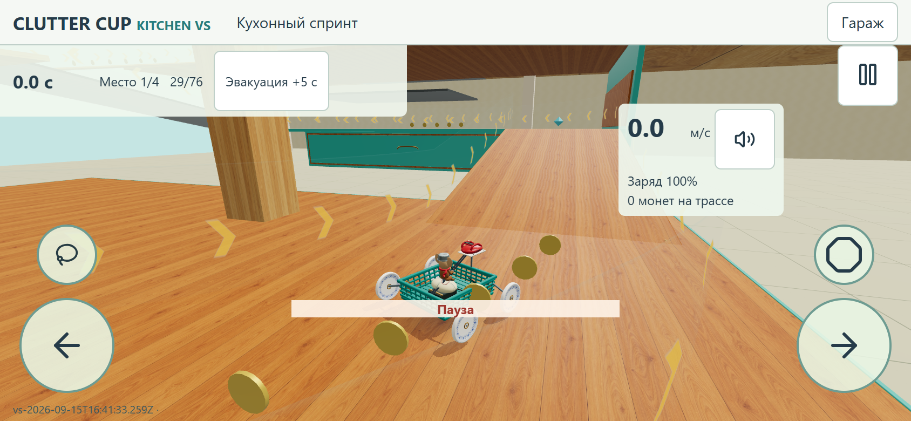
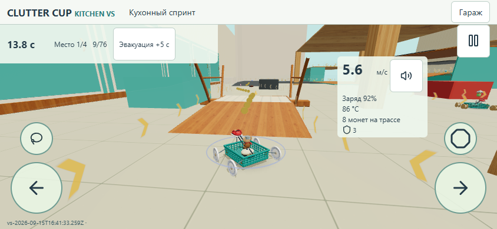
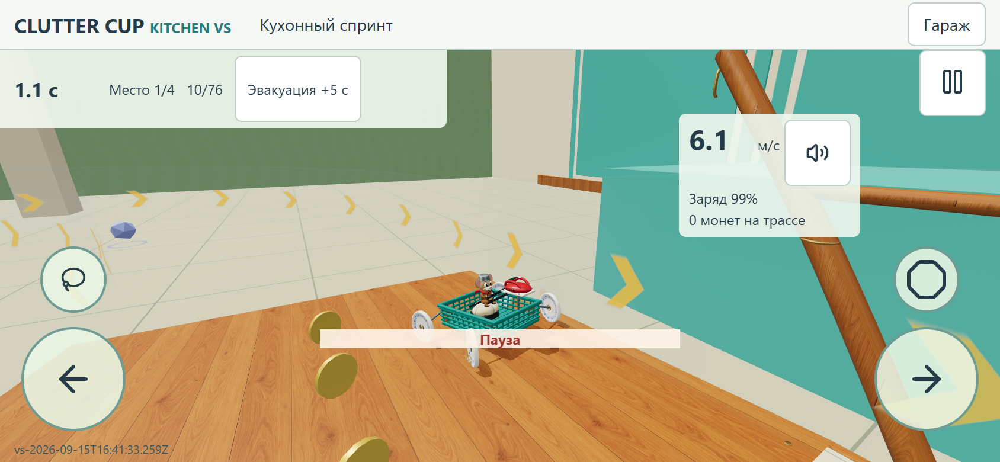
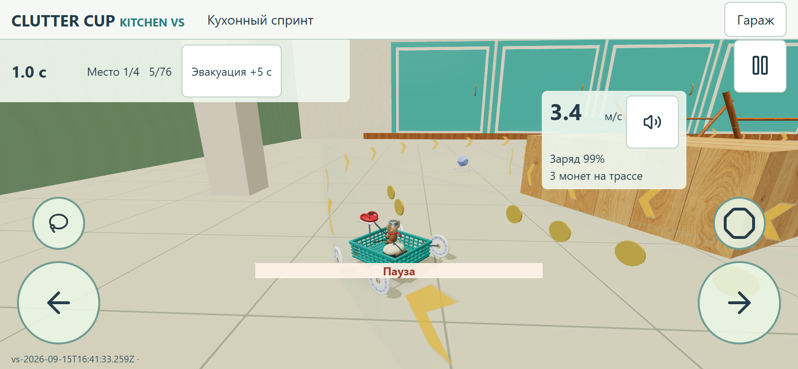
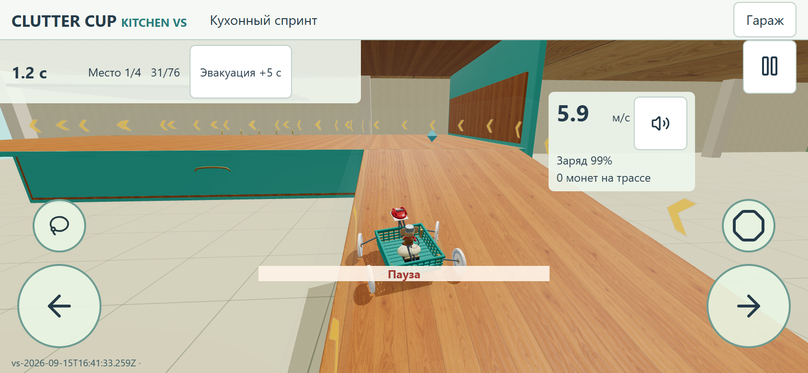
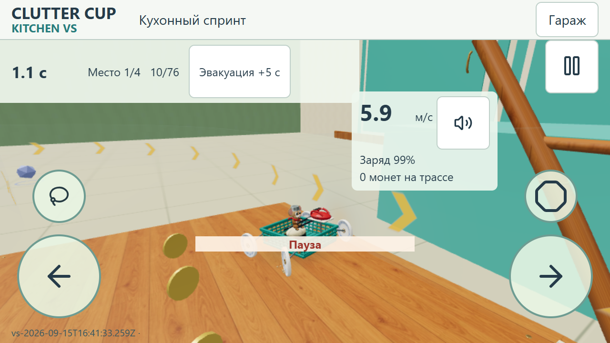
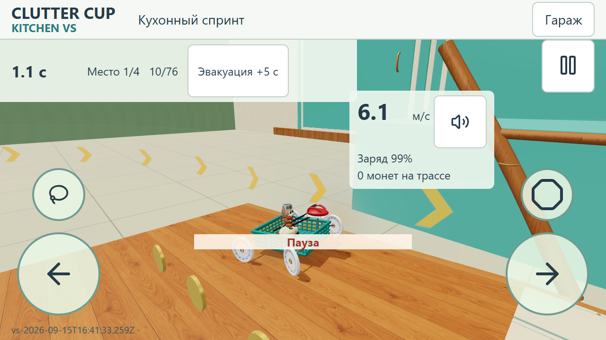
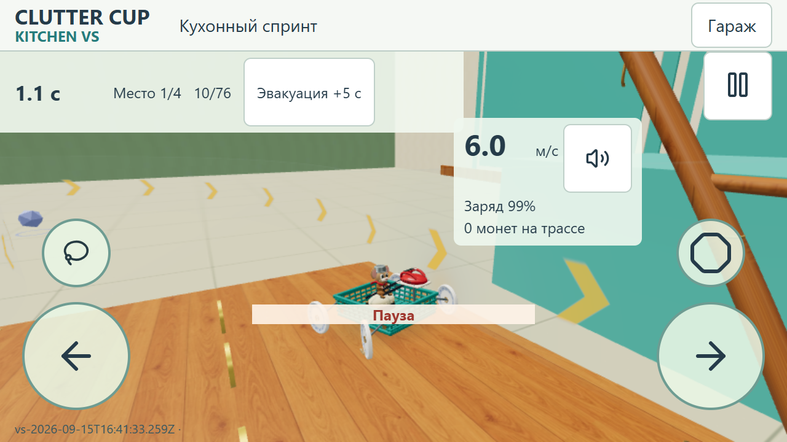

CLUTTER CUP · KITCHEN ACCIDENT ART 01
Кухня после завтрака.
Граница, видимая гонщикам.
Открыть игру · Standard · Light · Build ID · Source commit
Первая сдача: кофе → перевёрнутый стул → таракан и первый подъём в шкаф. Без отдельного дорожного покрытия. Полупрозрачное поле использует точные физические вершины границ. Ни камера, ни физика, ни горизонтальный интерфейс не переделаны.
Обычный проезд со звуком
Непрерывная запись реальной игры до checkpoint35, включая первый подъём. Штатный проверочный ИИ подаёт обычное управление; время и положение машины не подменяются. Это запись образца, не доказательство полного финиша.
Исправление мерцания и стрелок
У совпадающих верхних граней оставлена одна видимая поверхность; коллайдеры не менялись. Пересекающиеся планки пересобраны, тонкие геометрические полосы убраны. Стрелки теперь каждые3,5ед., толще, ярче и движутся со скоростью2,275ед./с. В reduced motion остаются неподвижными.
 Предыдущая публикация
Предыдущая публикация
Исправление по обратной связиРеференс и реальные игровые ракурсы
 Цель: свет, материальность, бытовой масштаб
Цель: свет, материальность, бытовой масштаб
Проезд на текущей игровой камереГраница: контакт, поворот, подъём
Снимки ниже используют начальную тестовую позицию, после которой машина движется обычной физикой. Световая реакция берётся из настоящего contact manifold, не из близости. Для кадра контакт поставлен на паузу. В reduced motion стрелки неподвижны, в Light и reduced motion вместо бегущей волны локальное затухание.

standard-844-impact-78Запись проверки standard-844-impact-78

standard-844-impact-45Запись проверки standard-844-impact-45

standard-844-impact-245Запись проверки standard-844-impact-245

light-640-impact-78Запись проверки light-640-impact-78

standard-640-reduced-78Запись проверки standard-640-reduced-78

light-640-reduced-78Запись проверки light-640-reduced-78
До / после · одинаковые физические позиции и штатная камера
Снимки в исходном разрешении доступны по нажатию. На статических проверочных позициях включена пауза; поведение камеры в движении показано в записи выше. Телефонные размеры — desktop Chromium с DPR2/touch-эмуляцией, не реальные устройства.
standard · 844×390 CSS px
До · coffeeПосле · coffee light · 844×390 CSS px
standard · 640×360 CSS px
light · 640×360 CSS px
Производительность на одном компьютере
150RAF, только уникальные отрисованные кадры; одна базовая машина, та же тестовая позиция. Heap — память JavaScript, не GPU. Это не замер телефона.
Честные ограничения
Референс богаче светотенью, формами и мелкими деталями. Остальные крупные предметы комнаты пока частично технические. Чашка сохраняет сплошной proxy: её устье занято кофе и осколками. Стул собран вокруг существующих низких поверхностей, поэтому показан перевёрнутым и сломанным. Новые ноги вне доступного коридора. Геометрию ради картинки не меняли.
Расширенный тест штатного ИИ позднее застрял у checkpoint63, вне этого образца. Проблема передана разработчику; успешный полный заезд этой версией здесь не заявляется. Проверено прохождение образца, реальные контакты границы, reduced motion, Standard/Light и возврат из portrait.